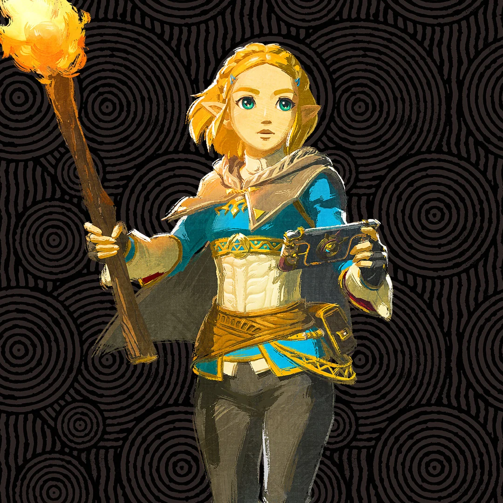
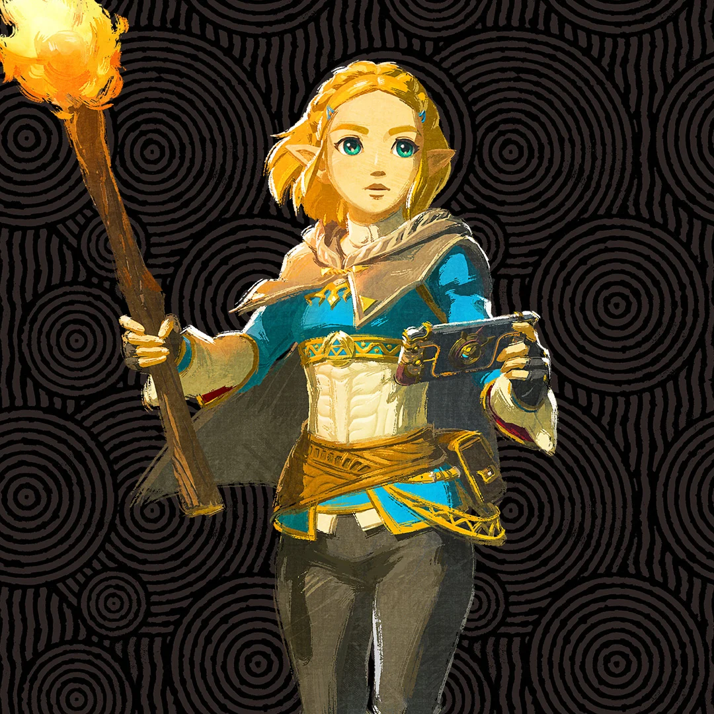
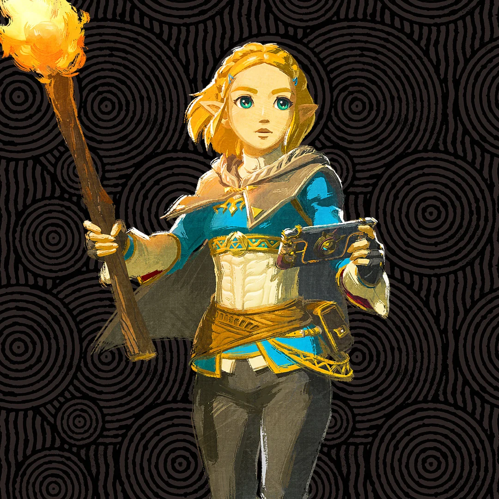
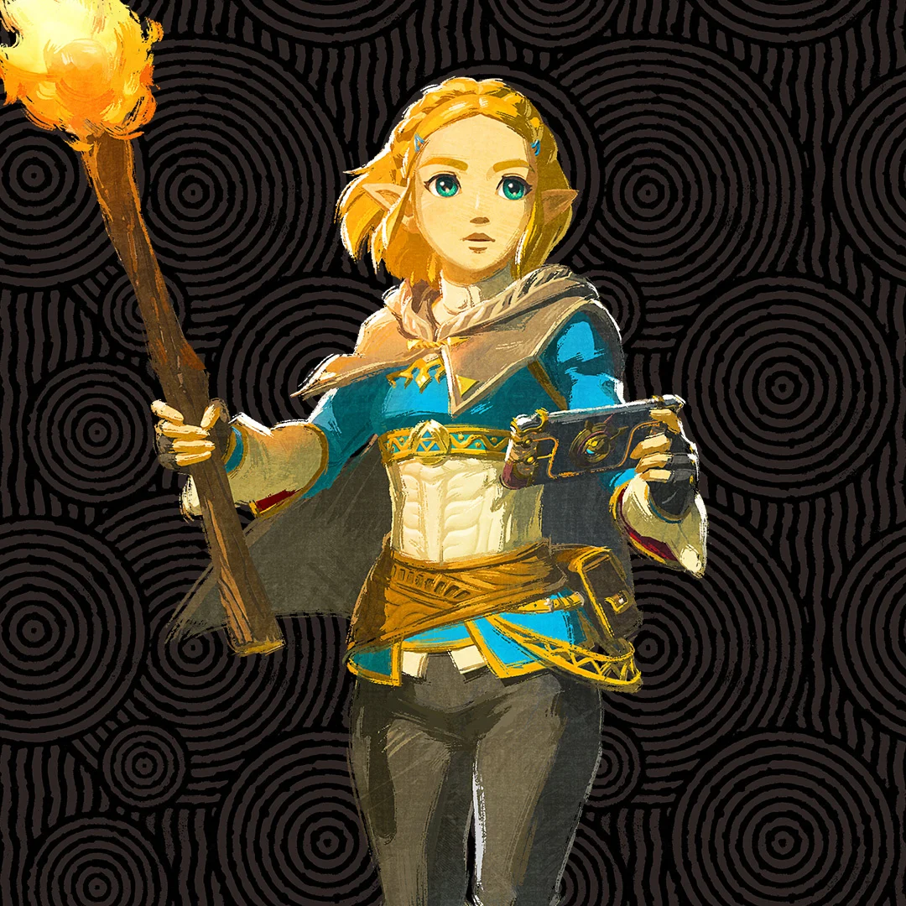
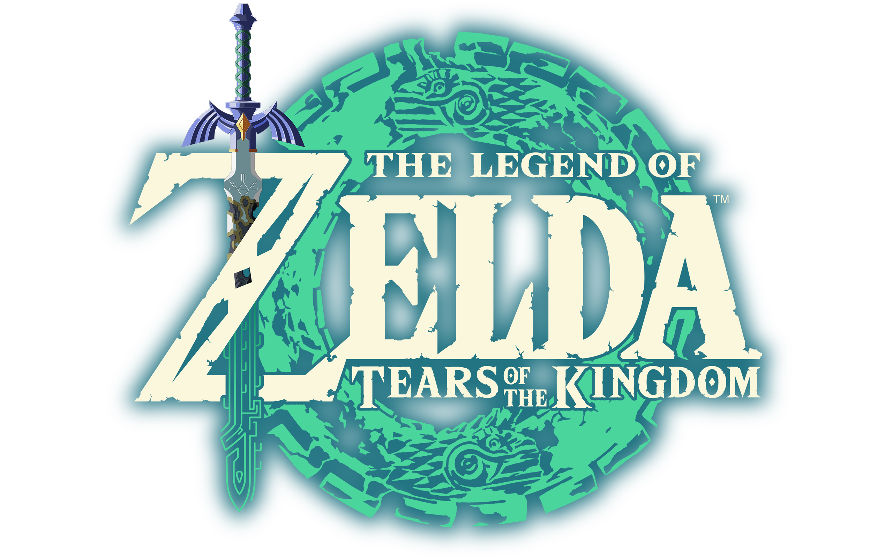

No reino de Hyrule, você é o herói que deve salvar o mundo!
A série é protagonizada por Link; um jovem herói pertencente a raça Hylian, essa raça constitui de um povo com orelhas grandes e pontudas semelhantes a elfos.
O herói possui um vínculo próximo com a Princesa Zelda; uma reencarnação da deusa Hylia e também princesa do reino de Hyrule. Cada jogo possui uma história e um objetivo únicos.
Apesar de que frequentemente o objetivo principal de Link nos jogos seja retratado como um herói protetor do reino de Hyrule e da Triforce, do antagonista Ganon.
A Triforce é uma relíquia deixada pelas deusas criadoras do reino: Din, Farore e Nayru, representado as virtudes da Coragem, Sabedoria e Poder respectivamente.
O mundo está em suas mãos, explore, descubra, e salve o reino!
Você será capaz de encontrar a Zelda e salvar Hyrule?
Mostre do que você é capaz em:
